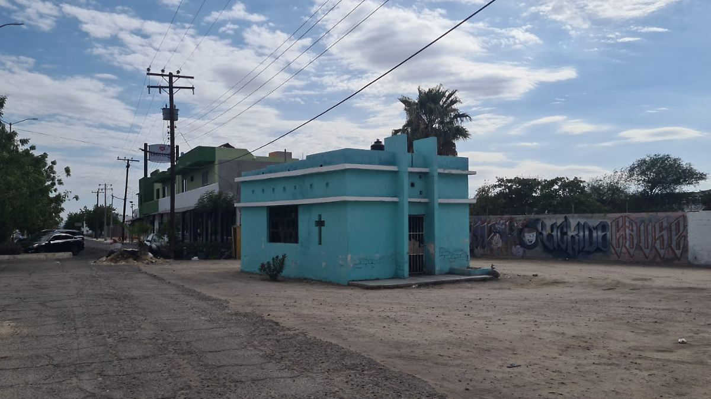
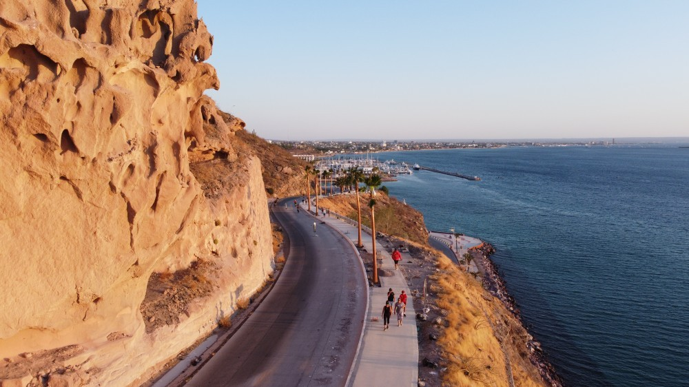
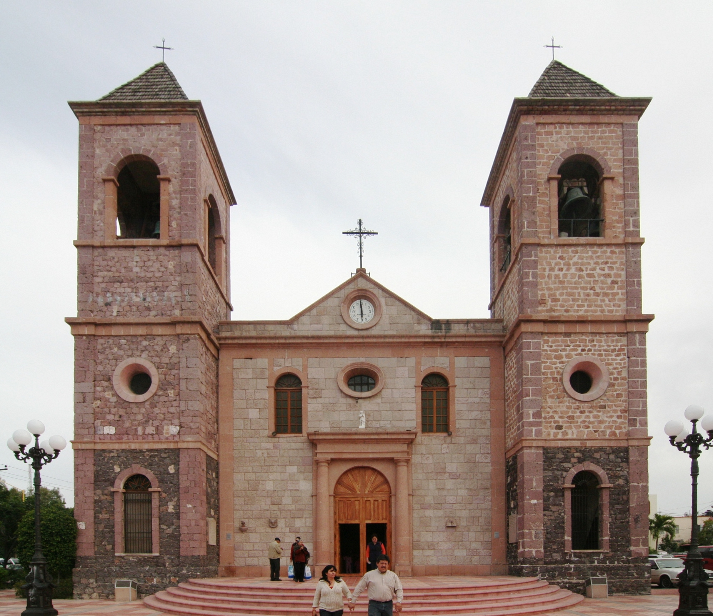

Lugares de Interés

Isla Espíritu Santo
(Área Natural Protegida de La Paz)
Ubicación
Frente a la costa de La Paz, Baja California Sur (Acceso mediante tours en el malecón de La Paz).
Una isla famosa por sus playas cristalinas, fauna marina y paisajes naturales únicos en Baja California Sur.

la Animita
(Zona Urbana de La Paz)
Ubicación
Blvd. Agutin olachea, Blvd. 5 de Febrero
Un espacio verde en el corazón de la ciudad, perfecto para relajarse y disfrutar del entorno natural.

Cerro la Calavera
(Zona Urbana de La Paz)
Ubicación
Carretera Ecénica (Mirador cerro de la calavera)
Un lugar histórico con arquitectura colonial y una rica cultura local.

Catedral de La Paz
(Zona Urbana de La Paz)
Ubicación
CI. 5 de Mayo, Revolucin de 1910
Un lugar histórico y religioso, emblemático de la ciudad de La Paz.